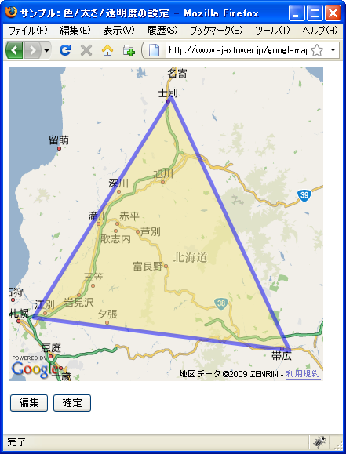
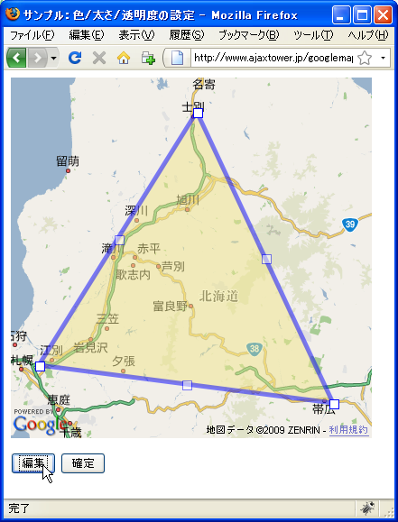
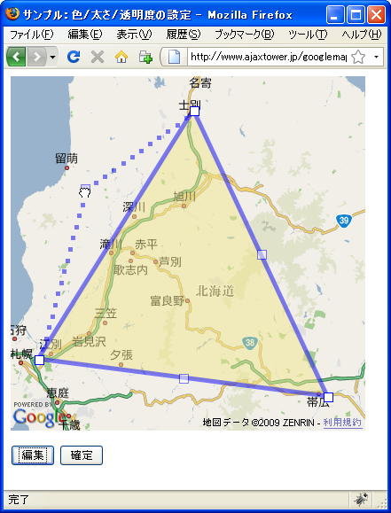
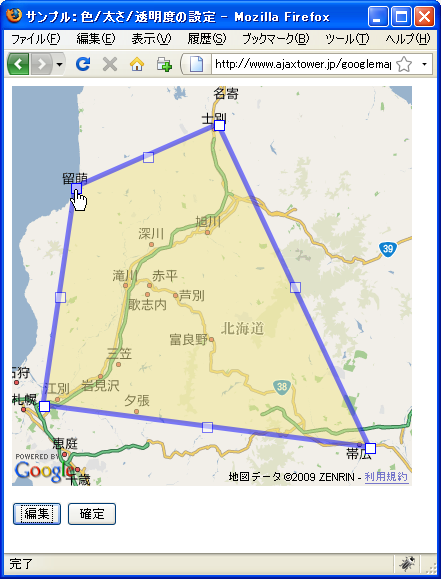
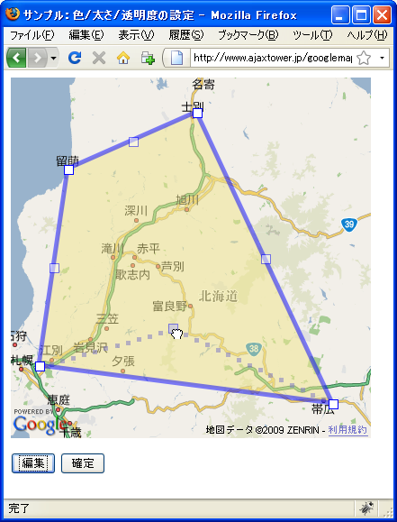
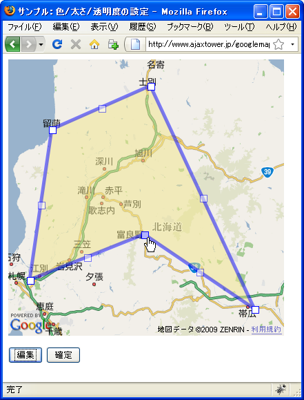
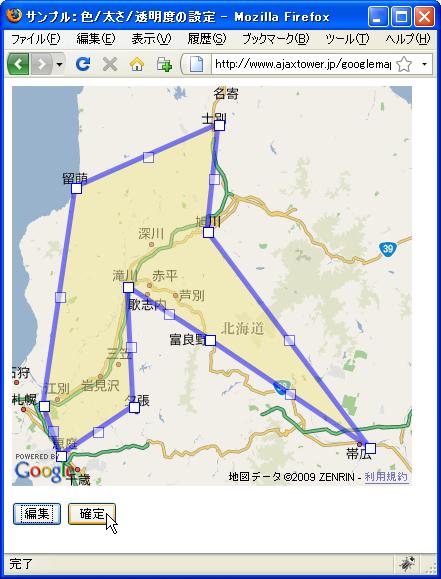
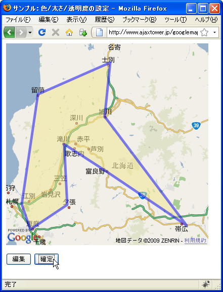

地図上でポリゴンの頂点を移動
地図上に表示されたポリゴンの頂点を地図上で動かしポリゴンの形状を変更する方法を確認します。GPolygonクラスで用意されているenableEditingメソッドを使います。
enableEditing(opts?:GPolyEditingOptions)
既存の GPolygon 境界を変更できるようにします。有効になると、ユーザーは既 存の頂点を選択したり、ドラッグしたりできます。頂点の現在数より少ない頂点 の制限が maxVertices 内の GPolyEditingOptions によって指定されない限り、 ポリゴン セクションの中間点に「ゴースト」ポイントも追加され、ユーザーは クリックおよびドラッグして新しい頂点を挿入できます。頂点が追加または移動 されるたびに、「lineupdated」イベントがトリガされます。
enableEditingメソッドが実行されると、対象のポリゴンの頂点を地図上で動かすことができるようになります。頂点をマウスでドラッグして新しい場所へ移動するとそれに合わせて頂点間を結ぶ直線が再描画されます。
また各頂点と頂点の間にはゴーストポイントと呼ばれる頂点が自動で追加されます。ゴーストポイントをマウスでドラッグして動かすと新しい頂点として認識され頂点が追加されたように直接が描かれます。次の例を見てください。
頂点1 --- (GP)--- 頂点2 ---(GP)--- 頂点3
頂点と頂点の間にはゴーストポイント(GP)があります。GPを動かすと、GPが新しい頂点となり新しい直線が描かれます。
頂点1 --(GP)-- 新頂点A --(GP)-- 頂点2 ---(GP)--- 頂点3
新しくできた頂点と隣接する頂点の間には新しくGPが出きるため、これを繰り返すことでより複雑な多角形が描かれていきます。
実際には次のように記述します。
var map = new GMap2(document.getElementById("map"));
map.setCenter(new GLatLng(34.98655,135.75531), 13);
var points = [
new GLatLng(34.991261,135.730076),
new GLatLng(34.997976,135.759945),
new GLatLng(34.965979,135.772219),
new GLatLng(34.991261,135.730076)
];
var polygon = new GPolygon(points, "#ff00ff", 4, 0.5, "#ff0000", 0.2);
map.addOverlay(polygon);
polygon.enableEditing();
頂点数の最大数
ゴーストポイントをマウスでドラッグしていくと頂点が追加されていきますが、頂点の数の最大数を指定することができます。頂点の最大数を設定するにはenableEditingメソッドの1番目の引数で指定します。
enableEditing(opts?:GPolyEditingOptions)
引数にはGPolyEditingOptionsクラスのオブジェクトリテラルを指定して下さい。使用するプロパティ名はmaxVerticesプロパティです。
maxVerticesプロパティ
このプロパティは、このポリラインで許容される頂点の最大数を指定します。こ の数値に達すると、それ以上追加できなくなります。 値： Number
例えばポリゴンの頂点数の最大値を8に設定したい場合は次のように記述します。
var map = new GMap2(document.getElementById("map"));
map.setCenter(new GLatLng(34.98655,135.75531), 13);
var points = [
new GLatLng(34.991261,135.730076),
new GLatLng(34.997976,135.759945),
new GLatLng(34.965979,135.772219),
new GLatLng(34.991261,135.730076)
];
var polygon = new GPolygon(points, "#ff00ff", 4, 0.5, "#ff0000", 0.2);
map.addOverlay(polygon);
var opts = {maxVertices:8};
polygon.enableEditing(opts);
頂点を動かすことができる状態を終了する
enableEditingメソッドによって頂点を動かすことができるようになりますが、この状態を終了させて頂点を動かせなくようにするにはGPolygonクラスで用意されているdisableEditingメソッドを使います。
enableEditing(opts?:GPolyEditingOptions)
引数にはGPolyEditingOptionsクラスのオブジェクトリテラルを指定して下さい。使用するプロパティ名はmaxVerticesプロパティです。
disableEditing()
enableEditing の効果を反転させ、線からすべてのコントロール ポイントを削 除して、ユーザーが編集できないようにレンダリングします。
disableEditingメソッドを実行すると、移動可能だった頂点が移動できない形で固定されます
実際には次のように記述します。
var map = new GMap2(document.getElementById("map"));
map.setCenter(new GLatLng(34.98655,135.75531), 13);
var points = [
new GLatLng(34.991261,135.730076),
new GLatLng(34.997976,135.759945),
new GLatLng(34.965979,135.772219),
new GLatLng(34.991261,135.730076)
];
var polygon = new GPolygon(points, "#ff00ff", 4, 0.5, "#ff0000", 0.2);
map.addOverlay(polygon);
polygon.enableEditing();
line.disableEditing();
サンプルプログラム
では試してみます。
var polygon;
function initialize() {
if (GBrowserIsCompatible()) {
var map = new GMap2(document.getElementById("map_canvas"));
map.setCenter(new GLatLng(43.555018,142.386932), 8);
var points = [
new GLatLng(44.19599,142.421265),
new GLatLng(43.082931,141.459961),
new GLatLng(42.910172,143.250732),
new GLatLng(44.19599,142.421265)
];
polygon = new GPolygon(points, "#0000ff", 5, 0.5, "#f0e68c", 0.5);
map.addOverlay(polygon);
}
}
function editLine() {
polygon.enableEditing();
}
function finishLine() {
polygon.disableEditing();
}
<!DOCTYPE html "-//W3C//DTD XHTML 1.0 Strict//EN"
"http://www.w3.org/TR/xhtml1/DTD/xhtml1-strict.dtd">
<html xmlns="http://www.w3.org/1999/xhtml" xmlns:v="urn:schemas-microsoft-com:vml">
<head>
<meta http-equiv="content-type" content="text/html; charset=UTF-8"/>
<title>サンプル：色/太さ/透明度の設定</title>
<script src="http://maps.google.com/maps?file=api&v=2&key=(key)&sensor=false"
type="text/javascript" charset="utf-8"></script>
<script src="./js/code3_1.js" type="text/javascript"></script>
</head>
<body onload="initialize()" onunload="GUnload()">
<div id="map_canvas" style="width: 400px; height: 400px"></div>
<form>
<p>
<input type="button" id="editbtn" value="編集" onclick="editLine()" />
<input type="button" id="finishbtn" value="確定" onclick="finishLine()" />
</p>
</form>
</body>
</html>
ではブラウザで上記のURLを見てみます。

現在は3つの頂点を順に結んだ三角形が描画されています。では地図下の「編集」ボタンを押して下さい。

直線の頂点の図形が変わりマウスでドラッグして動かすことが出きるようになります。


また既存の頂点と頂点の間にゴーストポイントが表示されます。これも同じようにドラッグして動かすことができます。


ゴーストポイントは動かす事によって新しい頂点となり、頂点数が増加した多角形が描画されなおされます。また新しい頂点ができると、隣接する頂点との間に新しいゴーストポイントが表示されます。
最後に地図下にある「確定」ボタンを押して頂くと、頂点を動かせなくすることができます。(再度編集を押せばまた動かすことができるようになります)。


( Written by Tatsuo Ikura )

著者 / TATSUO IKURA
初心者～中級者の方を対象としたプログラミング方法や開発環境の構築の解説を行うサイトの運営を行っています。